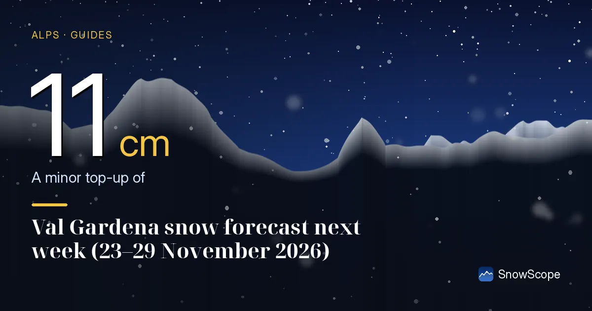

Val Gardena snow forecast next week (23–29 November 2026): a minor top-up of 11 cm
Val Gardena gets a small share of next week's snow: 11 cm at around 2500 m in the middle of our forecast, 10 cm at mid-mountain and 6 cm down at 1400 m. The best of it should come on Wednesday 25 November.
See the live snow forecast for Val Gardena in the SnowScope appSnow depth, powder alerts and the 3D map, free.
This week in Val Gardena: the set-up
This week gives little here: 4 cm at the top from 17 to 20 November and almost nothing (1 cm) at the base. Next week is the bigger of the two for Val Gardena, which is the reverse of the western Alps.

What falls where on the Val Gardena slopes
Our forecast splits Val Gardena's week like this: upper slopes 11 cm (low 5, high 18), middle of the mountain 10 cm, lower runs 6 cm (low 1, high 11).
Day by day, the upper mountain picks up most of it on Wednesday 25 (4 cm, up to 5) and Thursday 26 (4 cm, up to 7). Outside those days expect little more than flurries.
Snow or rain at the bottom?
The gap between 11 cm at the top and 6 cm at around 1400 m points to a snow line somewhere on the lower slopes: dry snow up high, wet snow lower down, perhaps rain at times in the village.
Val Gardena is part of the Sella Ronda, so a thin top-up still opens the classic loop only if the snow-making has done its part.
How nearby resorts compare
Same week, same measure (top of each resort): Cortina d'Ampezzo (30 km away) 13 cm; Hintertux (59 km away) 14 cm; Obergurgl (64 km away) 13 cm. Val Gardena itself: 11 cm.
Nothing to separate them on snow alone; the choice comes down to the terrain you want.
Best day, best slopes
Wednesday 25 November brings the most, 4 cm at the top and 5 cm at best: enough to soften the pistes, not enough for a powder day.
The snow lies best on the Seceda and the Ciampinoi. For the softest turns, look to the shaded Ciampinoi and the Sella Ronda links towards Wolkenstein. Lower down, Ortisei, Santa Cristina and Selva in the valley will be the first to suffer if the air turns mild.
How sure is this?
Reasonably, with a caveat. The snow is coming to Val Gardena, but the top could end up anywhere between 5 and 18 cm, and the middle value of 11 cm is only the halfway mark.
We will refresh these numbers every day; the resort page carries the latest version.
Tips for skiers
- Fresh snow on a young snowpack: read the regional avalanche bulletin (bollettino valanghe) before any off-piste plan.
- Opening dates are the resort's call; our numbers only say how much snow is coming.
- With 11 cm at the top, this is not a week to chase powder in Val Gardena.
More maps (external sites)
About these numbers
Snow numbers: our two-week snow forecast issued on 16 November 2026, read at three heights of the resort (top, mid-mountain, base). Each total is the middle of a range, with a low and a high case. These are estimates for the slopes, not resort measurements, and forecasts move from day to day: check the live map before you go.
Cite this report
For research, teaching or the press: the numbers and charts are free to reuse under CC BY 4.0 with this citation.
SnowScope (2026), Val Gardena snow forecast next week (23–29 November 2026): a minor top-up of 11 cm, https://snowscope.app/blog/en/2026/11/val-gardena-snow-forecast-next-week-23-29-november-2026.html, accessed 2026-11-16
SnowScope (Atlas Labs). (2026, November 16). Val Gardena snow forecast next week (23–29 November 2026): a minor top-up of 11 cm. SnowScope snow reports. https://snowscope.app/blog/en/2026/11/val-gardena-snow-forecast-next-week-23-29-november-2026.html
BibTeX
@misc{snowscope2026valgardenasnowforecastne,
author = {{SnowScope (Atlas Labs)}},
title = {Val Gardena snow forecast next week (23–29 November 2026): a minor top-up of 11 cm},
year = {2026},
month = nov,
howpublished = {\url{https://snowscope.app/blog/en/2026/11/val-gardena-snow-forecast-next-week-23-29-november-2026.html}},
note = {Published 2026-11-16 11:52 UTC; accessed 2026-11-16}
}· CC BY 4.0 · Methods, data and tools →
Val Gardena: snow and temperature by height, this winter vs last (tools) →
Follow Val Gardena
Free: a message when fresh snow is coming, and the forecast every morning.
More snow reports

Les 2 Alpes reaches 3511 m for high snow in December 2026, with an adult 6-day pass priced at 266.50 EUR.

Grimentz-Zinal offers 71 km of runs and reliable high-altitude snow for your December trip, with 6-day passes at CHF 339.00.

Davos and Klosters share six ski mountains. A day-by-day plan, starting on Parsenn, with what 46 past winters of our snow history say about its heights.